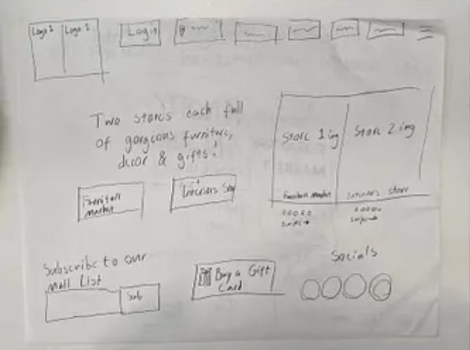
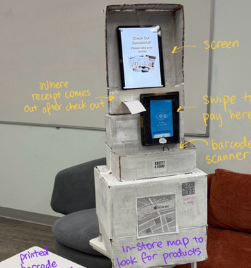
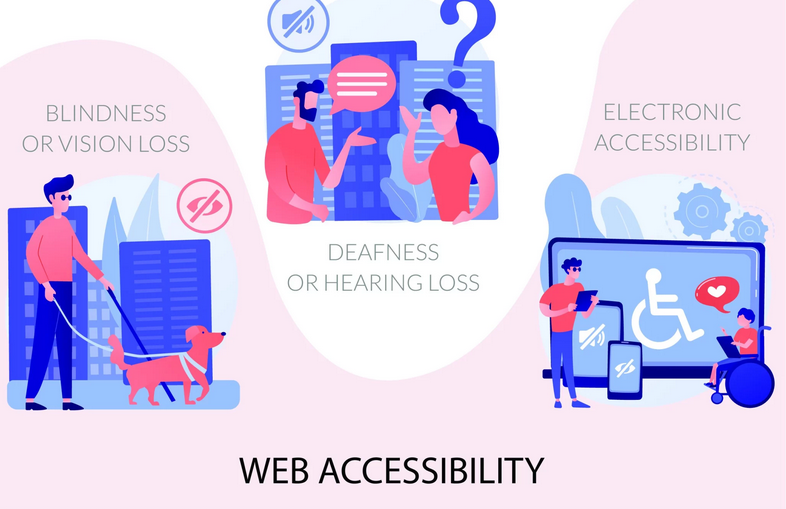

Design Manifesto
Products in tech often fail because teams build what users ask for rather than what they actually need. Human-centered design — grounded in needfinding, prototyping, and iteration — is essential before investing in expensive builds. After five HCI design sprints, these five principles stood out as the most vital.

Five principles
- Establish a plan before building
- Constrain adequately, but be ambitious
- Be ready to solve the same problem multiple times
- Always have a target audience in mind
- Be prepared to learn something new
1. Establish a plan before building
Teams must conduct thorough needfinding before prototyping. When my group developed a fitness-tracking app, interviews helped us understand what college students needed. When we built a physical kiosk, usability testing made more sense because we already had a digital base to improve on. Persona creation and prior research are equally crucial.
Prototyping should start at low fidelity — paper sketches and Figma wireframes before anything expensive. One theme I noticed all semester: ideas are hard to communicate through words alone. When each teammate sketches their own concept and the team converges on one direction, misunderstandings disappear. That is where the "human" in human-centered design really shows up.

2. Constrain adequately, but be ambitious
After converging on a low-fidelity prototype, teams can still push toward higher fidelity. Adding features on the fly is risky but can pay off when everyone stays aligned and changes stay within scope.
Modality matters. During our VR game sprint, I added collision detection, death screens, and sound effects quickly because I owned the code. For our physical kiosk, adding or removing features risked damaging structural integrity — so we focused on incremental improvements to the existing design rather than starting over.

3. Be ready to solve the same problem multiple times
Our fourth sprint required revisiting the Knotty & Board website from sprint one and extending it into a physical kiosk for elderly shoppers. Even with a solid foundation and in-class feedback to build on, it was our hardest sprint — largely because I underestimated how demanding iteration would be. That was a mistake: iteration is the point, not a setback.
4. Always have a target audience in mind
A keyboard-only navigation assignment drove this home. Without a keyboard, sites became painfully slow to use, and some were entirely unnavigable. Poor accessibility is not a minor inconvenience — it directly harms productivity and excludes people. A site built for older users that ignores colorblindness, low vision, or limited mobility is a bad site. After that exercise, I started noticing accessibility gaps everywhere I browsed.

5. Be prepared to learn something new
I entered HCI without knowing A-Frame, d3.js, or accessibility best practices. New skills are not always languages — needfinding requires finding interviewees and drawing out useful information, which is its own craft. Teamwork demands people skills that developers often undervalue.
Don Norman argues in The Design of Everyday Things that when users misunderstand a product, the fault lies with the designer. Products should communicate clearly through affordances and thoughtful layout.
These principles shaped a repeatable process: gather information, prototype, test with users, iterate. But genuine interest in the problem and real contribution to the team matter most. With enough enthusiasm, iteration stops feeling like rework and starts feeling like progress toward something worth shipping.